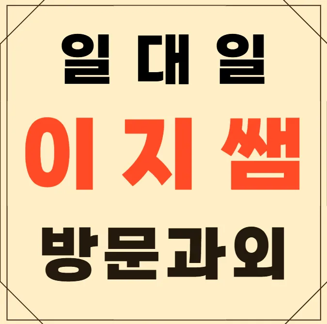

첫 번째로 유촌동 초등 과외의 교육 철학이 가정의 학습 목표와 맞는지를 확인해요. 다음으로 강사의 경력과 전공, 실제 강의 영상을 통해 전달력과 전문성을 검증해요. 수업 형태가 온라인과 오프라인을 유연하게 병합하여 시간 활용도가 높은지를 살펴보아요. 학습 관리 시스템이 개별 피드백과 진도 추적 기능을 제공하는지 체크해요. 주변 학부모들의 실제 후기와 만족도를 비교 분석하여 신뢰도를 판단해요. 마지막으로 유촌동 초등 과외의 시설과 교재가 최신 교육 트렌드에 맞춰져 있는지를 확인해요. 예산 범위 내에서 제공되는 서비스 항목을 상세히 비교해보면 비용 대비 효과를 가늠할 수 있어요. 방문 상담 시 직접 체험 수업에 참여해보면 강사의 진행 방식과 학생들의 반응을 직접 확인할 수 있어요. 유촌동 초등 과외의 위치가 집과 직장 사이에 편리하게 자리 잡고 있으면 통학 스트레스를 줄일 수 있어요. 유촌동 초등 과외을 선택 시에는 교육 철학이 학생의 성장 목표와 일치하는지 확인하면 장기적인 학습 지속이 가능해요. 마지막으로 유촌동 초등 과외의 운영 시간과 휴무일을 체크해 생활 패턴에 맞는 선택을 하는 것이 중요해요.
초등 저학년은 놀이와 학습이 자연스럽게 연결되는 환경을 선호해요. 초등 고학년은 스스로 목표를 설정하고 관리하는 능력이 발달해요. 중학생은 교과목 간 연계성을 이해하려는 노력이 필요해요. 고등학생은 대학 진학과목에 대한 심층 분석이 요구돼요. 전체 학년에서는 학습 계획을 유연하게 조정할 수 있는 시스템이 중요해요. 이러한 특징을 고려하면 각 연령대에 맞는 유촌동 초등 과외을 선택하는 데 도움이 돼요.
유촌동 초등 과외는 학습 집중도가 떨어지는 원인을 정밀 분석하고 즉각 개입하는 시스템을 운영해요. 개별 학생의 학습 패턴을 데이터화해 맞춤 피드백을 제공하며, 매주 진행되는 진도 점검으로 목표 달성을 촉진해요. 주요 대상은 초등 저학년부터 고학년까지이며, 특히 한자 학습에 어려움을 겪는 학생에게 체계적인 단계별 교육을 제공해요. 커리큘럼은 기본 개념 이해 응용 문제 풀이 실전 모의고사 순으로 구성돼요. 수강료는 한자급수(초1~4) 136,498원, 한자급수(초5~6) 146,999원이며, 교육 내용과 비교해 합리적인 수준이라고 평가받고 있어요. 학부모가 직접 체험해 보면, 스트레스 없는 학습 환경과 구체적인 성장 기록이 큰 장점으로 다가와요. 유촌동 초등 과외 상담 시간에는 학습 현황과 향후 계획을 투명하게 공유해, 가정과 유촌동 초등 과외의 협력 관계를 강화해요.
| 과외명 | 와와학습코칭과외 |
| 수강료 | 한자급수(초1~4) 136,498원 | 한자급수(초5~6) 146,999원 |
CURRICULUM
커리큘럼은 학교 내신 일정에 맞춰 설계돼요. 장기 성장 로드맵을 제시해 단기 목표에만 머물지 않게 해줘요. 학생은 스스로 학습 성향을 파악하고, 맞춤형 전략을 적용해요. 틀린 문제는 유사 사례를 스스로 만들어보며 이해도를 높여요. 매주 진행 상황을 점검하고, 필요한 부분은 즉시 보완해요.
국어 문장 연결 문제 감각을 높여주는 훈련을 꾸준히 하면 실수가 확 줄어들어요. 목표는 연속 두 번 만점을 받는 것이죠. 학습 피드백을 수용하고 반영할 수 있도록 돕는 과정이 중요해요. 선생님의 조언을 귀담아듣고 자신의 것으로 만들 때 실력이 비로소 껑충 뛰거든요. 유촌동 인근 학생들은 대체로 기초는 있는데 문맥 파악에 약한 경우가 많아요. 이런 부분을 집중적으로 보완해주면 성적 향상은 자연스럽게 따라오게 되어 있어요. 아이가 스스로 실수를 찾아내는 힘을 기르는 것이 가장 중요합니다.
학습 과정이 핵심이라 출결 기록과 집중시간 측정을 철저히 해요. 보상형 자기 루틴을 운영해 아이가 스스로 동기부여를 유지하도록 돕고, 흐름을 다시 잡는 유연한 수업 운영 구조를 마련해요. 개념 간 원인-결과-영향 분석을 통해 이해도를 높이고, 학교별 시험에서 자주 출제되는 과학적 개념을 정리해요
고등학교 1학년으로 수업 태도는 좋지만 응용력이 부족한 아이에게 개인화된 전략이 필요해요. 이 학생은 기본 개념은 탄탄하지만 문제 풀이에서 창의적 접근이 부족해요. 맞춤형 피드백과 단계별 과제 제공으로 응용력을 키울 수 있어요
선생님이 세심하게 질문을 던져주셔서 공부하는 동기가 확 생기더라고요. 처음 갔을 때 따뜻하게 맞아줘서 기분이 정말 좋았고, 아이 눈높이에 맞춰 설명해주시는 게 자연스러워서 따라가기 쉬웠어요. 전체 공간도 깔끔해서 딴생각 없이 집중하는 데 큰 도움이 됐고, 무엇보다 교재를 직접 만드셔서 수업에 딱 맞게 구성해주시는 게 인상 깊었어요. 덕분에 공부가 조금씩 재미있어지는 것 같아서 부모님도 좋아하시고 저도 기분이 너무 좋아요. 처음엔 유촌동 초등 과외 가는 게 싫었는데 이제는 가는 게 기대가 될 정도로 분위기가 너무 좋아요. 선생님이 친절해서 물어볼 때도 주눅 들지 않고 편하게 질문할 수 있었어요.